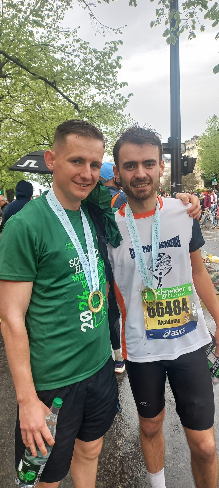

Personal Project
Order of malte
My brother and sister and I were responsible for setting up the Order of Malta's first-aid post at the Grand Palais in Paris on New Year's Eve.

A first for me as team leader of 12 people to set up and power the main emergency tent.
With the exception of a generator damaged during the evening, there were no incidents to report and it was a successful first, pending further operations.
Marathon
I took up the marathon challenge!

I'm very proud to have managed to complete the 42 km, despite my limited preparation for the academic competitions.